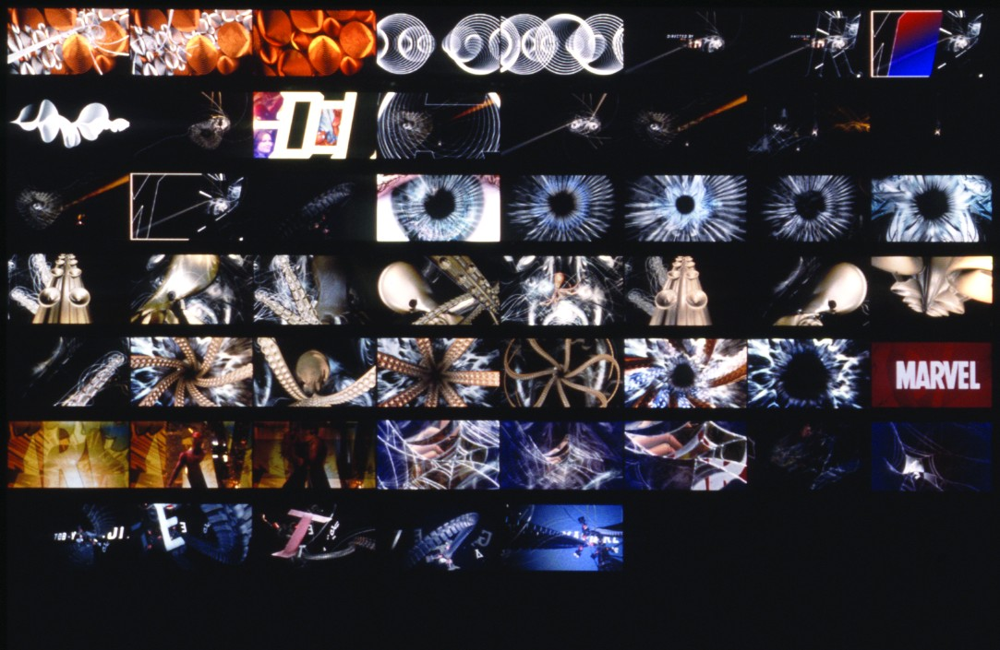

Imaginary Forces · Film · 2002
Spider-Man Main Titles
Art direction on the main title sequence for Sam Raimi's Spider-Man with Kyle Cooper at Imaginary Forces.
Role
Art Director
Studio
Imaginary Forces
Director
Kyle Cooper
Film
Spider-Man (Columbia Pictures, 2002)
The problem
Columbia's producers asked Kyle Cooper and Imaginary Forces to open the first major Spider-Man film with a prologue that set its tone before a single line of dialogue.
The approach
Built the sequence from the web itself: fractured panels, sketch-line portraiture and graphic diagonals that cut between Peter Parker, Mary Jane and the city.

Leadership
Art directed within the Imaginary Forces team. That foundation in motion, narrative and systems thinking runs through every product role since, alongside title work on Minority Report, Panic Room and Band of Brothers.